Guia de Estilo
Introdução
Identidade Visual da NeoEnergia
Logo
O logotipo é composto pelo símbolo e pela tipografia, havendo apenas duas variações: horizontal e vertical, como pode-se observar na figura 1. Segundo o documento da marca, a prioridade deve ser sempre para o logotipo vertical, enquanto a versão horizontal deve ser utilizada em último caso.
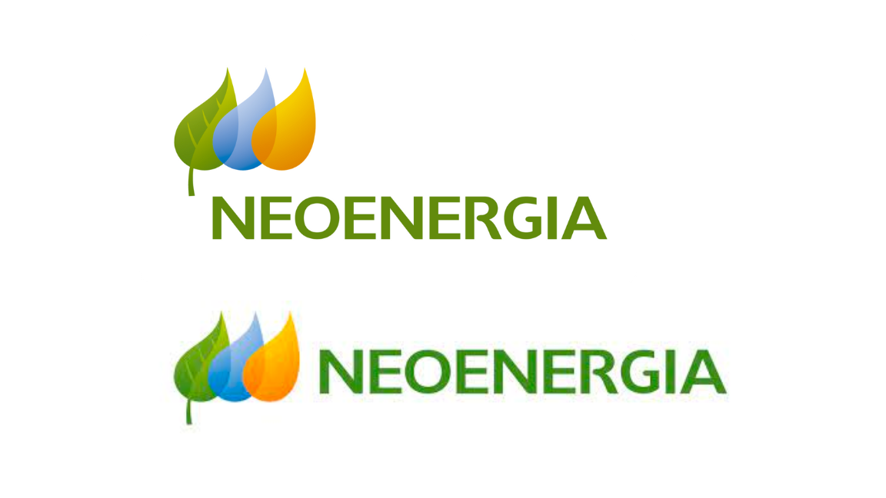
Figura 1: logotipos da Neoenergia
Fonte: https://www.neoenergia.com
Também há variações dos logotipos em negativo, caso seja necessário posiciona-los sobre um fundo mais escuro, conforme pode-se ver na figura 2.
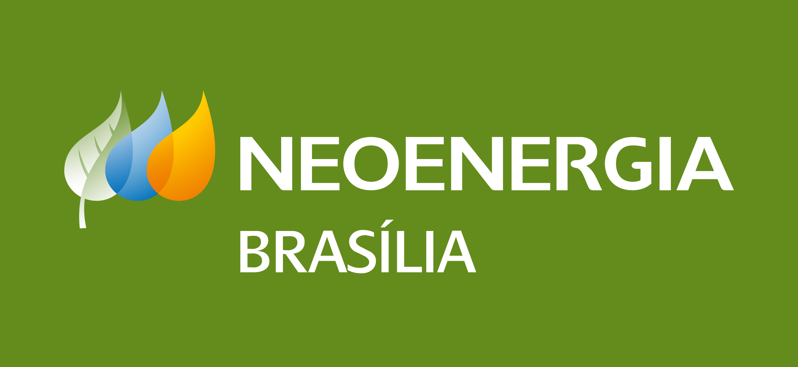
Figura 2: logotipo negativo da Neoenergia
Fonte: https://www.neoenergia.com
Há uma regra de aplicação do logotipo a respeito da área de proteção em torno do mesmo. A marca deve estar rodeada por uma área de proteção mínima. Isso é necessário para que a presença do logo não seja diminuída por outros elementos. Essa área de proteção mínima pode ser observada na figura 3.
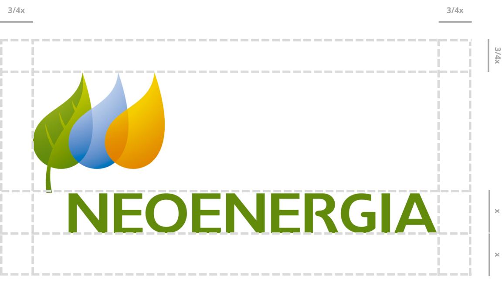
Figura 3: logotipos da Neoenergia
Fonte: https://www.neoenergiaelektro.com.br
Cores
Há 3 paletas de cores na identidade visual da marca: as cores corporativas primárias, as cores corporativas secundárias e as cores verdes corporativas.
As cores corporativas primárias são: verde, azul, amarelo e laranja, conforme mostrado na figura 4. É de extrema importância que os tons usados sejam iguais ao equivalente no sistema Pantone.
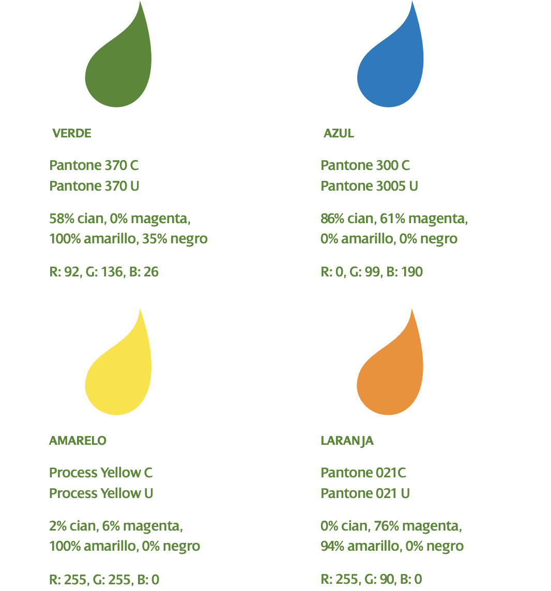
Figura 4: Cores Primárias
Ao utilizar as cores, deve-se primeiro dar preferência ao verde, mas caso não seja possível, pode-se recorrer ao laranja, amarelo e azul, nessa ordem, conforme descrito no gráfico 1.
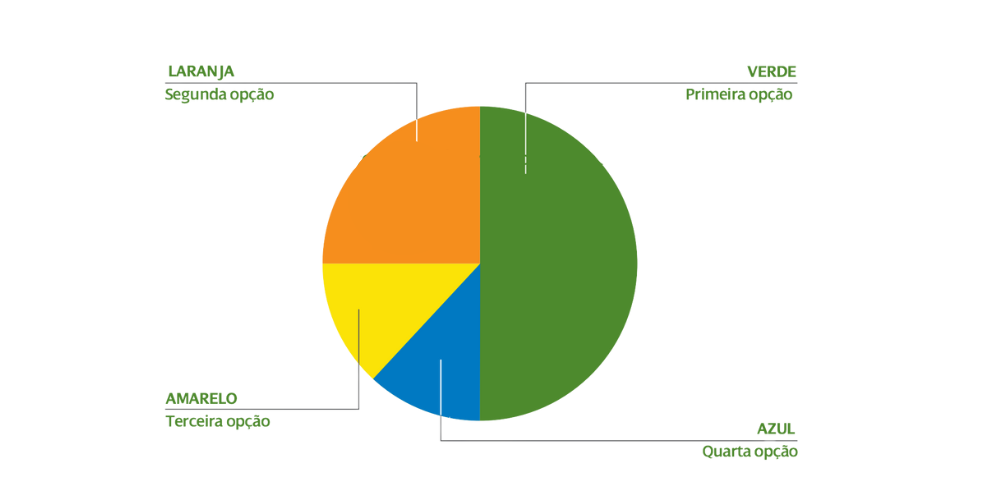
Gráfico 1: Proporção de importância das cores primárias
As cores corporativas primárias também são: verde, azul, amarelo e laranja, porém em um diferente tom, conforme mostrado na figura 5. As cores secundárias podem ser usadas para complementar as cores primárias.
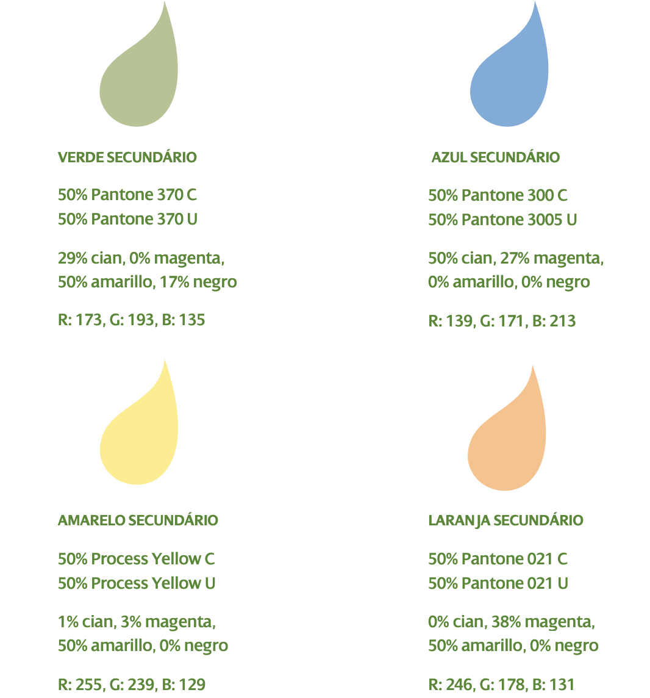
Figura 5: Cores Secundárias
Ao utilizar as cores, deve-se seguir a mesma ordem de prioridade que as cores primárias: verde, laranja, amarelo e azul, nessa ordem. Podemos observar isso no gráfico 2.
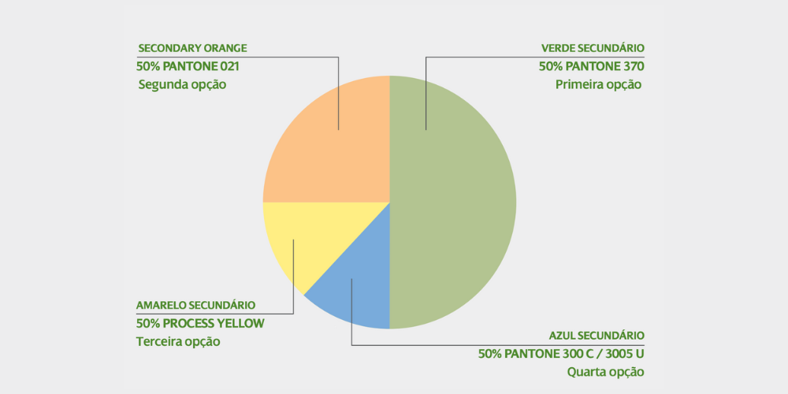
Gráfico 2: Proporção de importância das cores secundárias
Pode-se observar na figura 6 as seis cores verdes coorporativas, que podem ser utilizadas para complementar as cores primárias e secundárias. A ordem de prioridade deve ser obedecida conforme descrito no gráfico 3.
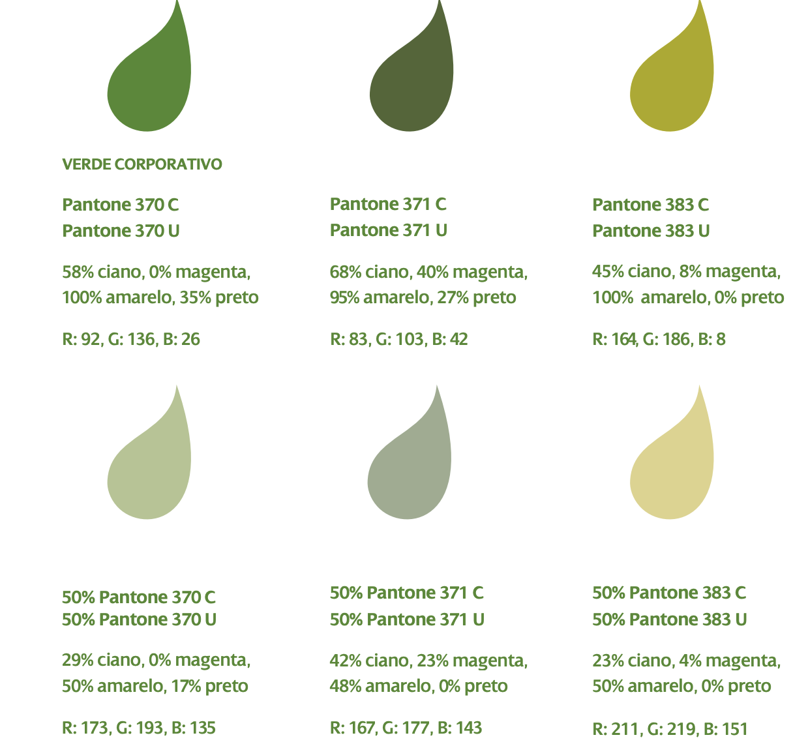
Figura 6: Paleta de Verdes
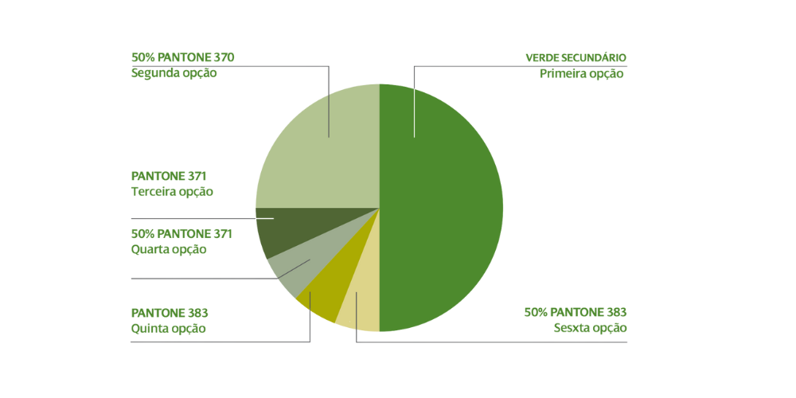
Gráfico 3: Proporção de importância das cores verde
Tipografia
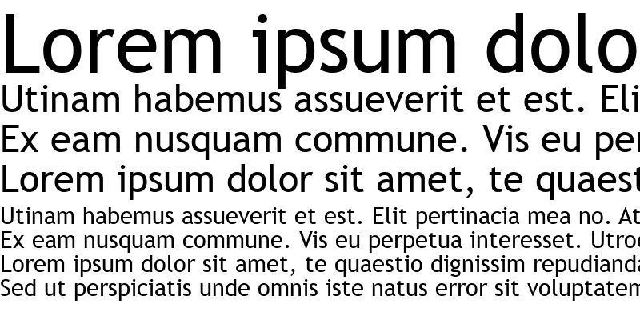
Figura 7: fonte Trebuchet Regular
Fonte: Fontsgeek
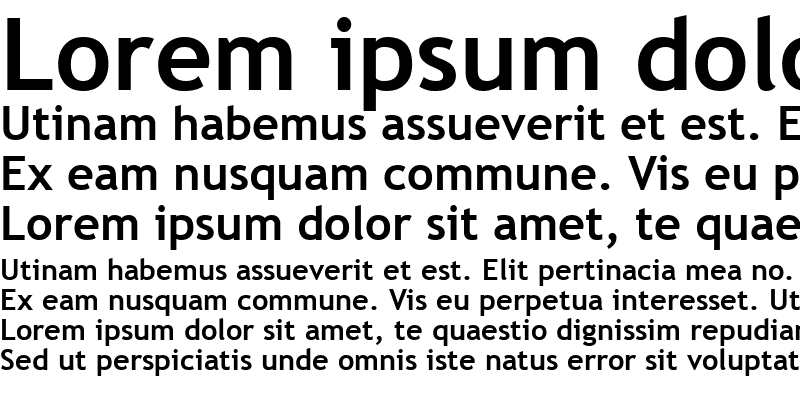
Figura 8: fonte Trebuchet Bold
Fonte: Fontsgeek
Botões e ícones
Figura 9: botão de acesso à Agência Virtual
Fonte: NeoEnegergia Brasília
Figura 10: botão "Saiba mais"
Fonte: NeoEnegergia Brasília
Figura 11: botão "Conheça outros canais"
Fonte: NeoEnegergia Brasília
Figura 12: botões de acesso às redes sociais
Fonte: NeoEnegergia Brasília
Figura 13: botão de atualização de cadastro
Fonte: NeoEnegergia Brasília
Figura 14: botão retangular de acesso à Agência Virtual
Fonte: NeoEnegergia Brasília
Figura 15: link de acesso ao cartão CNPJ
Fonte: NeoEnegergia Brasília
Figura 16: links de acesso às tarifas de energia
Fonte: NeoEnegergia Brasília
Análise de estilo
Logo
Ao analisar o site da Agência Virtual da NeoEnergia, considerando as boas práticas de aplicação do logotipo conforme o Manual da Marca citado anteriormente, pode-se perceber uma violação na área de proteção mínima. Isso acontece na página inicial, conforme a figura 17, em que pode-se observar que o logotipo ultrapassa a área do menu.
Figura 17: Página Inicial da Agência Virtual Neoenergia
Fonte: https://agenciavirtual.neoenergiabrasilia.com.br
Também podemos observar o mesmo comportamento nas páginas de serviço: o logotipo ultrapassa o menu, se sobrepondo a outros elementos da página, conforme mostra a figura 18.
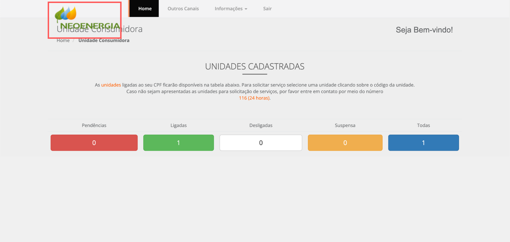
Figura 18: Página de Serviços da Agência Virtual Neoenergia
Fonte: https://agenciavirtual.neoenergiabrasilia.com.br/Servicos
Cores
Ao analisar as cores, pode-se perceber várias violações ao manual de cores descrito anteriormente. Na página inicial as cores predominantes são Azul e Laranja. O azul utilizado não é o que foi especificado na paleta de cores da marca. Apesar do laranja estar no tom correto, ele deveria aparecer na tela apenas quando não fosse possível utilizar o verde, regra a qual não é seguida, pois o verde não aparece em nenhum momento na página inicial, a não ser na logo. Pode-se perceber isso nas figuras 19, 20 e 21. Também podemos observar nas imagens 20 e 21 que foi utilizado a cor cinza, porém ela não foi especificada nas paletas de cores da marca.
Figura 19: print da home do site Agência Virtual da Neoenergia
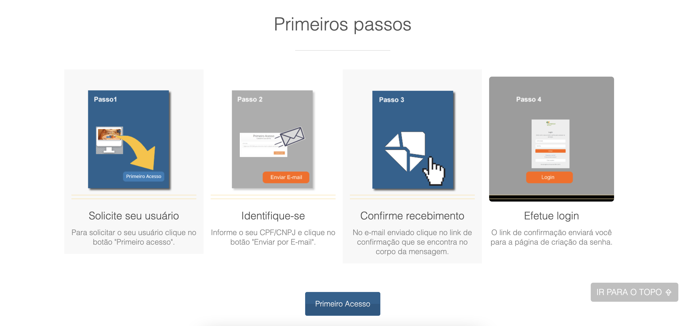
Figura 20: print da home do site Agência Virtual da Neoenergia
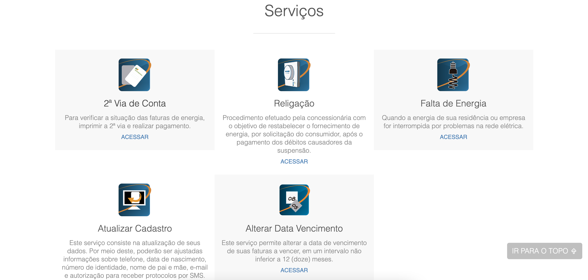
Figura 21: print da home do site Agência Virtual da Neoenergia
Nas páginas de serviços pode-se perceber os mesmos problemas de predominância da cor azul e ausência do verde principal, conforme ilustra a figura 22.
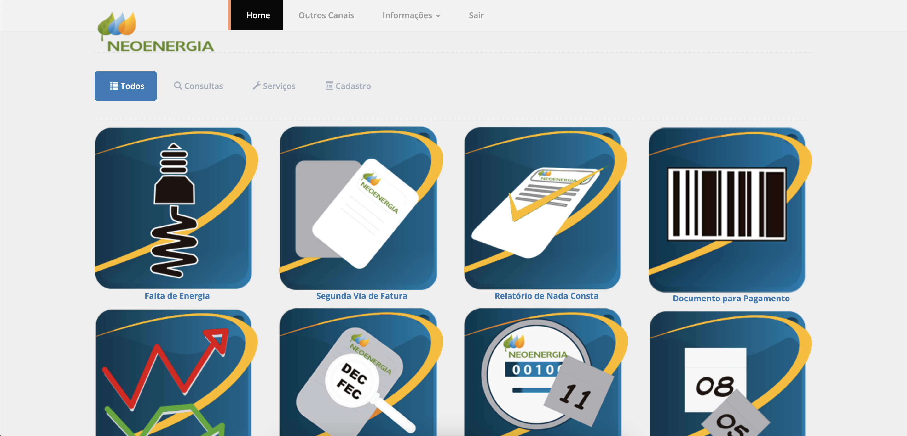
Figura 22: print da página de serviços do site Agência Virtual da Neoenergia
Tipografia
Figura 23: print do site Agência Virtual da Neoenergia
Botões e ícones
Figura 24: botões de acesso à conta da agência
Figura 25: botão "Serviços expressos"
Figura 26: botão "fechar"
Figura 27: ícones e links de serviços
Figura 28: ícones/botões de acesso às redes sociais da Agência Virtual
Bibliografia
ELEMENTOS BÁSICOS. Disponível em: https://www.neoenergiaelektro.com.br/Media/Default/DocGalleries/Manual%20de%20Identidade/Novo_manual_Elektro_completo_V2.pdf - Acesso em 26/07/2022
Quem Somos. DIsponível em: https://www.neoenergiabrasilia.com.br/sobre-nos/sobre/Paginas/default.aspx - Acesso em 26/07/2022
Barbosa, S. D. J.; Silva, B. S. da; Silveira, M. S.; Gasparini, I.; Darin, T.; Barbosa, G. D. J. (2021);Interação Humano-Computador e Experiência do usuário.
A importância da tipografia no universo do design gráfico. Disponível em: https://www.escola-panamericana.com.br/acontece/a-importancia-da-tipografia-no-universo-do-design-grafico#:~:text=O%20tipo%20da%20fonte%20pode,marca%20e%20engajar%20o%20p%C3%BAblico. - Acesso em 28/07/2022
A Importância das Decisões de Design em Uma Interface. Disponível em: https://catarinag.medium.com/a-import%C3%A2ncia-das-decis%C3%B5es-de-design-em-uma-interface-7a2171ddff7a - Acesso em 29/07/2022
Tabela de Versionamento
| Data | Versão | Descrição | Autor | Revisor |
|---|---|---|---|---|
| 25/07/2022 | 0.1 |
Criação de tópicos | Natan Santana | Clara Ribeiro |
| 26/07/2022 | 0.2 |
Tópico de introdução | Natan Santana | Luíza Esteves |
| 28/07/2022 | 0.3 |
Tópico de tipografia e análise da tipografia | Natan Santana | Luíza Esteves |
| 28/07/2022 | 0.4 |
Tópico de logo e cores | Clara Ribeiro | Luíza Esteves |
| 28/07/2022 | 0.5 |
Tópico de botões e ícones | Rafael Xavier | Luíza Esteves |